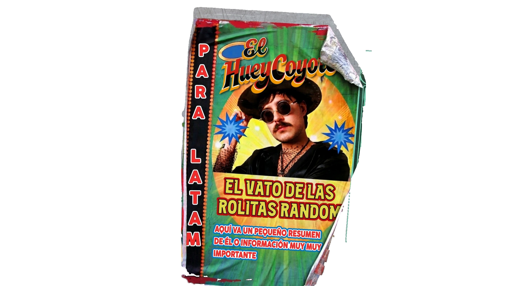
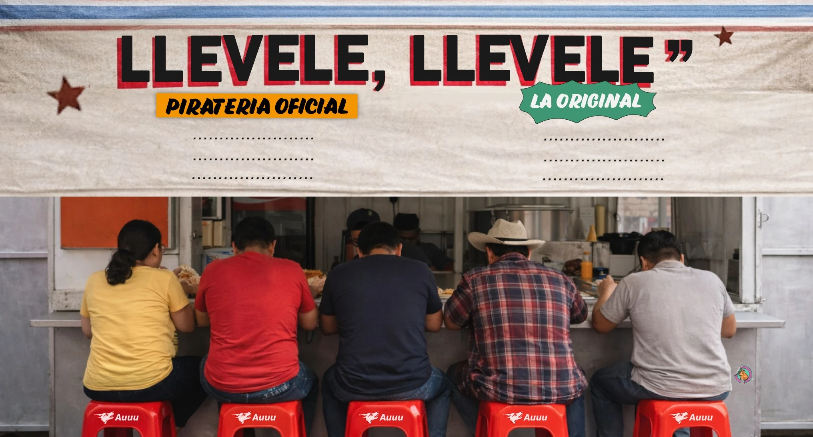

Sobre El HueyCoyote
Próximos Shows
Tienda online
Galería
Contacto
USB'S
CON CUMBIAS
PA' ENAMORAR
¿YA ME CONOCES?
PRÓXIMOS
SHOWS
PA’ LLEVAR
CON LA RAZA
ÉCHAME UN
GRITO

E
l
m
E
R
o
m
E
R
o
JUN
07
PUEBLA
JUL
14
CDMX
AGO
22
GUADALAJARA
SEP
02
MONTERREY
OCT
25
LEÓN
NOV
04
TIJUANA

PLAYERAS :
CHAMARRA :
CALCETAS :
PLAYERAS :
CHAMARRA :
CALCETAS :
$250
$350
$800
$1000
$150
3X50
›
›
›
×
‹
›
2226740285
ABRE EL CHANGARRO
Pon una rolita
✕
Las rolitas del HueyCoyote